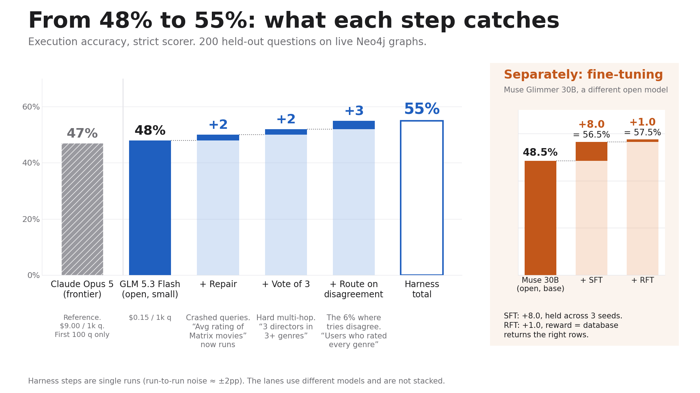

Fraud analysts can't ask their graph database a question without waiting on an engineer.
We tested 10 tasks. Each one is "input → output". The best open model already aced most of them, so they left no room to improve.
| Task | Frontier | Best small open | Room to improve? |
|---|---|---|---|
| Broken code → fixed code | 96% (GLM 5.3) | 99% (GLM Flash) | No |
| Request → right tool of 100 | 95% (Kimi K3) | 98% | No |
| Meeting transcript → action items | n/a | 0.93 F1 | No |
| Request → function call | 92% (GLM 5.3) | 92% | No |
| Support ticket → intent (77) | 88% (Kimi K3) | 87% | No |
| Product page → JSON record | 70% (GLM 5.3) | 77% | Label noise |
| Contract clause → type (100) | 74% (Kimi K3) | 69% | Label noise |
| Plain English → regex | n/a | 68% (87% w/ examples) | Prompting fixes it |
| Plain English → SQL | not finished | n/a | |
| Clinical note → ICD-10 codes | not run | n/a | |
| Plain English → Cypher (graph) | 47% (Claude Opus 5) | 48% | Yes |
METRIC TBD: pick with Raheel. Every number shows its baseline.
Any analyst asks any database in plain English and gets a verified answer from a small model they own.
47% → 55%
Claude Opus 5 → our system, same questions, scored by running every query on a live graph.
$9.00 → $0.77 per 1,000 questions
Strict scoring, 200 locked questions (Claude on the first 100). Our 55% is a single run; repeated runs average 52%.
Recorded clip goes here (~30s).

Top 3 technical moves: (1) exam verified by running every answer key on the live database, (2) repair loop that feeds the database error back, (3) SFT + RFT on Fireworks with "database returns the right rows" as the reward.
| At 2,000 questions/day | Claude Opus 5 | Our system |
|---|---|---|
| Accuracy | 47% | 55% |
| Cost per month | $540 | $46 |
| Cost per correct answer | $0.019 | $0.0014 |
| Time per answer | ~2 seconds vs ~20 minutes for an engineer (assumption) | |
Add: market size $ (source needed) and engineer-hours saved.
Next: run the fine-tuned model inside the harness. Publish the corrected benchmark. Send low-agreement answers to a human review queue.
Repo is PRIVATE today. Needs a secrets check, then go public.